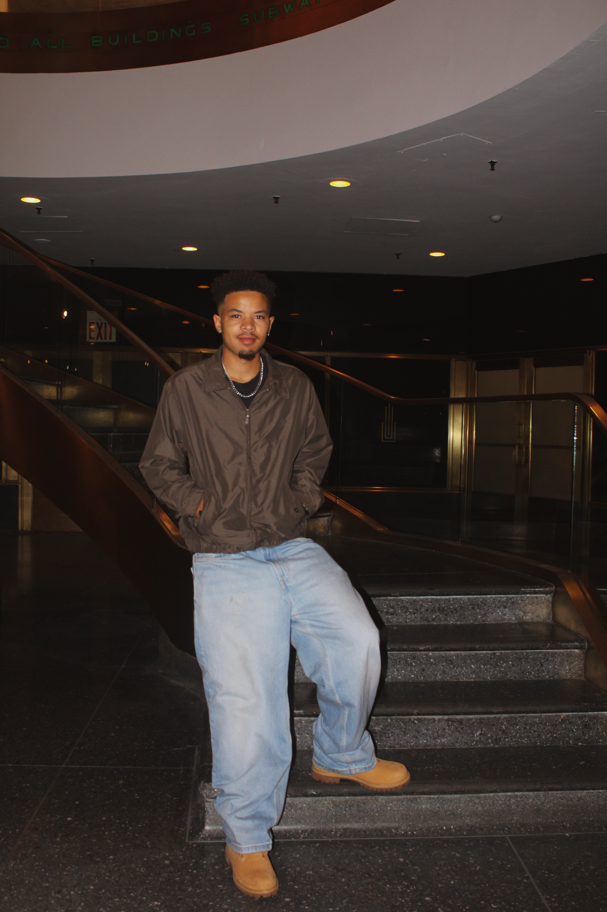

Jason Morris Jr. is a visual artist whose work spans photography and multiple forms of creative expression. His art is driven by emotion, curiosity, and a desire to capture the world in a way that feels honest, intentional, and meaningful.
He focuses on creating pieces that reflect both personal perspective and shared human experience—turning everyday moments, travel, and imagination into visuals that tell a story beyond what's immediately seen.
As an artist, Jason is continuously evolving his style and voice, with a strong focus on growth, discipline, and originality. His goal is not just to create art, but to build a body of work that resonates, lasts, and stands for something deeper.
Ultimately, he aims to leave a lasting mark on the world through his creativity—producing work that inspires, challenges perspective, and outlives the moment it was made in.